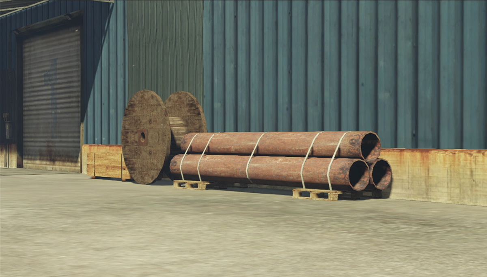
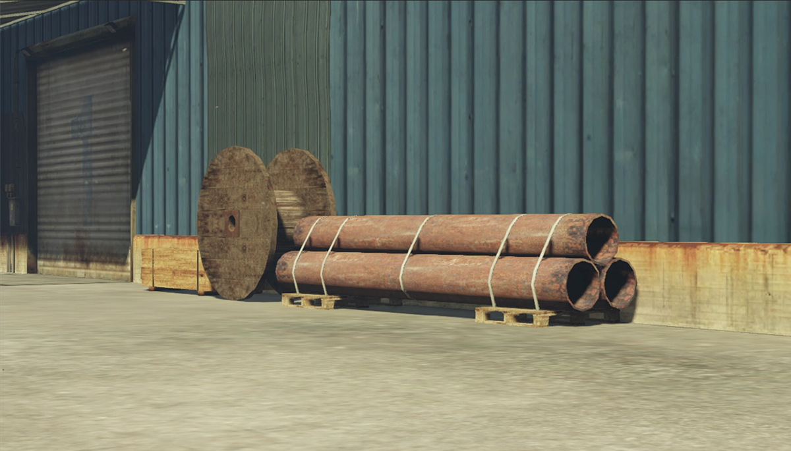

To prove my thesis statment, I used three video games for source material: Grand Theft Auto V (2013), Fallout 3 (2008), and Star Wars: Knights of the Old Republic (2003). The trio are all open world games, each one existing in a world further from our own. While the gameplay of each game is very fun, what I find most intriguing is the political systems that exist within each game. It’s never “you vs. bad guy,” it’s you vs. a private security firm, you vs. the corrupt leftovers of the former U.S. government, or you vs. a galaxy wide trading corporation with a long history of slavery.
After purchasing a capture card, I began taking photos within each game. In GTA, I took photos using my character's smart phone. In Fallout 3 and KotOR I took photos in the games' first person mode.
 



My discoveries within these video game worlds made me shift my focus from surface critiques to the methodology of the designers that create this space. It brought me to my current thesis statement and lead me to making the “corkboard” below.